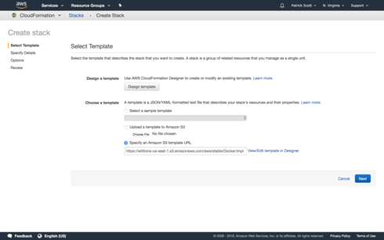
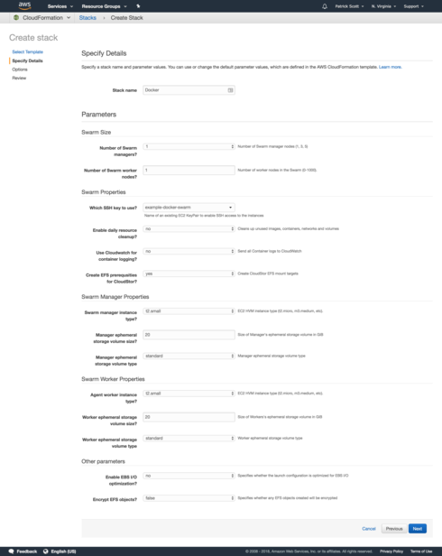
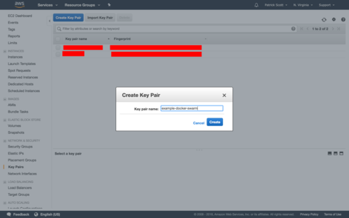
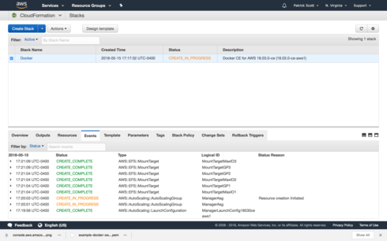

[GDD] Production Orchestration (Part 1 of 3) 06 December 2018
We’ve finally made it.
We’ve simulated a production cluster using docker-machine and deployed our application to it!
The final stretch is figuring out how this translates to a production environment.
Today, let’s run a Highly Available Docker Swarm Cluster in Amazon’s AWS with Autoscaling Groups, Load Balancers, and more!
First things first - you’ll need an AWS account for this.
If you've been wondering what an "orchestrator button" was since this article (https://hackernoon.com/my-journey-to-achieving-devops-bliss-without-useless-aws-certifications-a7cbf7c539d1) your question will be answered today!
I’ll be selecting the smallest resource sizes for this demonstration, and we can destroy them at the end of the lesson. It still could end up costing you a few dollars depending on your current AWS usage already.
So go ahead and log in to your AWS account.
Then, click this link: https://console.aws.amazon.com/cloudformation/home#/stacks/new?stackName=Docker&templateURL=https://editions-us-east-1.s3.amazonaws.com/aws/stable/Docker.tmpl
It's also available, as a button on store.docker.com:
This will open the “CloudFormation” page of the logged in AWS account, on the “Create Stack” page.

CloudFormation is a way to create scripted infrastructures by describing the resources and their connections that make it up.
It’s ALMOST that easy. If you click next, you’ll find out on the next page you’ll need to provide an “ssh key”.
For simplicity’s sake, let’s just create this in the UI quickly. In DevOps Bliss, we won't need to do this manual step so bear with me for now.
Click the “AWS” logo up at the top left to get back to the HomePage, and then type “EC2” into the search box. Navigate to the EC2 Page by clicking it in the results.

Click “Key Pairs” on the lefthand side.
On the next page, click the blue “Create Key Pair” button, and give your key a name.
This is an example docker swarm, so I’m naming mine “example-docker-swarm”

When you create it, it will also be downloaded by your browser as a “.pem” file.
This IS the key to access your cluster. Kinda like a key to your home, you should keep it safe, and do not lose it! You will not be able to get a backup!
(You can switch the key used to access the cluster if you do lose it though)
Now, with your key saved securely, let’s create the swarm...
Go back and click the link above to re-open the CloudFormation page.
This time, click “Next”, and then use the following configurations - use your key instead of mine though!
Let’s start with 1 Manager, and 1 Worker Node for now - we will make both of them “t2.small” instances.
If you want OK logging, you can enable cloud watch logs, and figure out how that works.
I cover much better solutions in my upcoming DevOps Bliss course, like using the ELK stack.
Make sure you select “yes” for EFS for Cloudstor. This will be important if you want to save data, like for databases.
To use the “EBS I/O optimization” we’ll need better machines than t2’s so don’t bother with that for now either.
Click “Next”.
On the next page, if you want to use tags for billing purposes, add that here. Otherwise, just click “Next” again.
Which brings us to the “Review” page.
Click the checkbox that says “I acknowledge that AWS CloudFormation might create IAM resources.” And then click “Create”.
You will be directed to a “Stacks” page, which depending on latency in AWS’s backend, may or may not show your new stack! Refresh it if it does not.
On a side tangent, this is evidence of a distributed system. It's clearly "eventually consistent".
Due to CAP theorem, - Consistency, Availability, Partition Tolerance - most scalable web companies generally choose to sacrifice “Consistency” - but that’s a long rant for another time, which affects your life in many ways every day.
Once you see your stack, select it, and then click the “Events” tab to see it’s creation progress.

If you look through, you'll see Cloud Formation setting up all sorts of AWS resources - load balancers, auto-scaling groups, even lambda functions and a dynamo db instance.
Docker Swarm For AWS aims to handle everything you need to run and scale Docker Swarm in production, including rolling updates through the same UI we used earlier.
After waiting a while, the status will eventually change to a green “CREATED” label.
It will definitely be done by tomorrow! (Probably in about 30 minutes from now)
See you then! And congratulations! You are (almost) running a Docker Swarm in production!
What do you think? That wasn't too hard was it! 😉
Patrick “Cloud Former” Scott